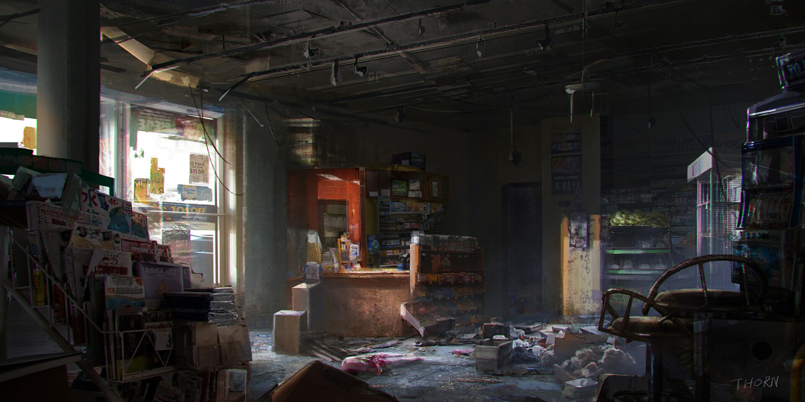
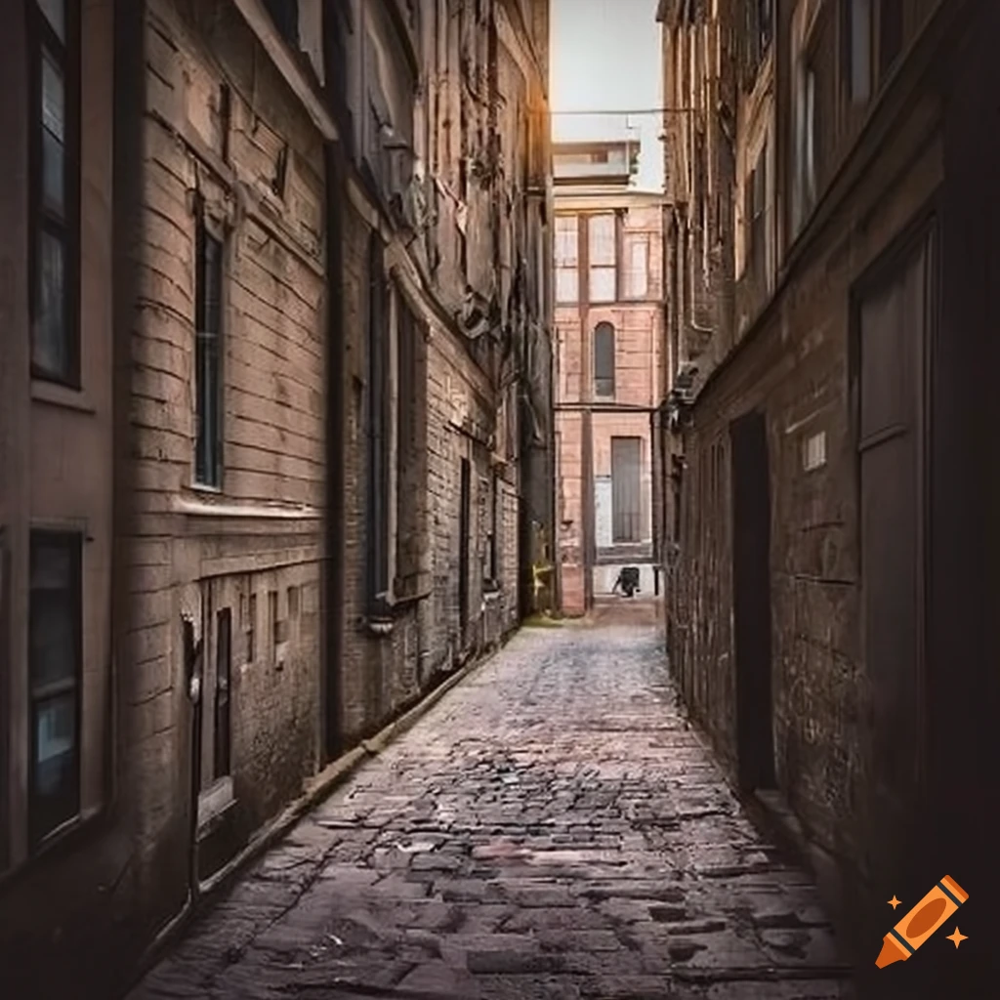

You decide to dismount the bike, and walking forward into the city you realise how many Undead there really is.
You are thankful that you decided to walk into the city, if you had rode into it you would have attracted all the Undead to you.
You notice a convience store with a broken window and an alleyway leading to your right.
Thinking quickly, you decide to...
Head into the convience store...
Or...
Continue down the alleyway...

